In its simplest form a polychord is a chord played over a note
(or notes) that are not the root of the chord. Polychords are
often used to voice some of the more complex jazz chords. On The
Stick it is not as easy to play a complex chord with a tight
voicing as it is on the piano, so polychords are a primary way
of playing such chords. Often polychord voicings sound lean and
modern (especially when only a bass note and a chord are played)
compared to full voicings of chords.
In its simplest form a polychord is a chord played over a note
(or notes) that are not the root of the chord. Polychords are
often used to voice some of the more complex jazz chords. On The
Stick it is not as easy to play a complex chord with a tight
voicing as it is on the piano, so polychords are a primary way
of playing such chords. Often polychord voicings sound lean and
modern (especially when only a bass note and a chord are played)
compared to full voicings of chords.
 In order to understand polychords more concretely let's play one!
With the bass side of The Stick play a C note. The C is on the 7th
string, 5th fret in standard tuning. Simultaneously play an E minor
chord on the melody side. Here is how to play an C + E minor chord
In order to understand polychords more concretely let's play one!
With the bass side of The Stick play a C note. The C is on the 7th
string, 5th fret in standard tuning. Simultaneously play an E minor
chord on the melody side. Here is how to play an C + E minor chord
 This chord is actually Cmaj7. It turns out that the
notes of an Em chord together with a C are
the same as those in a Cmaj7. For this chord, putting
the bass note together with the chord still has all of the notes
of the full chord.
This chord is actually Cmaj7. It turns out that the
notes of an Em chord together with a C are
the same as those in a Cmaj7. For this chord, putting
the bass note together with the chord still has all of the notes
of the full chord.
(For some of the more complex chords, some
notes get left out.)
 In sheet music, polychord voicings are often written something
like Fmaj7/B♭, or Fmaj/B♭ bass, to
mean an F major 7th chord with a B♭ (4th) in the bass. In
the last Theory On Tap lesson (#10),
Jeff discussed this notation. But for this theory discussion
it is most useful to use a different notation. The ear hears
the tonal center of a chord (or even a polychord) in the bass,
so it makes sense to root our view of a polychord in the same
place. We also need a notation that shows the relationships
without regard to key. In this article I will describe polychords
using the following notation:
In sheet music, polychord voicings are often written something
like Fmaj7/B♭, or Fmaj/B♭ bass, to
mean an F major 7th chord with a B♭ (4th) in the bass. In
the last Theory On Tap lesson (#10),
Jeff discussed this notation. But for this theory discussion
it is most useful to use a different notation. The ear hears
the tonal center of a chord (or even a polychord) in the bass,
so it makes sense to root our view of a polychord in the same
place. We also need a notation that shows the relationships
without regard to key. In this article I will describe polychords
using the following notation:
Maj 3 min
The Maj on the left means you start with a major chord.
The 3 in the middle means you go up a third from the chord to find the root of the second chord. It's a major third, because this interval is based on a major scale. For consistency I always use a major scale even if the chord is minor. A minor third would be indicated by ♭3.
The min on the right means the second chord is a minor chord. This notation describes the example in the previous section. In that example a C major chord could have been played in the left hand while an E minor chord (E is the 3rd of the C major scale) is played over it.
 Here are some of the chords you see in sheet music and hear in songs a
lot, along with their polychord equivalents. I personally do not
normally play chords with the left hand when doing polychord stuff
(just the bass notes). Of course in the more complex chords some
notes are left out by doing this, and you should be careful that the
important notes are included. I like the spare sound of the chord
without all of the notes, but some styles of music (like old-style
traditional jazz) come out better with full chords.
Here are some of the chords you see in sheet music and hear in songs a
lot, along with their polychord equivalents. I personally do not
normally play chords with the left hand when doing polychord stuff
(just the bass notes). Of course in the more complex chords some
notes are left out by doing this, and you should be careful that the
important notes are included. I like the spare sound of the chord
without all of the notes, but some styles of music (like old-style
traditional jazz) come out better with full chords.
| Chord | Polychord | Example |
|---|---|---|
| Maj7 | Maj 3 min | CMaj7 Em/C |
| min7 | min ♭3 Maj | Am7 C/A |
| dom7 | Maj 3 dim | G7 Bdim/G |
| dom9 | Maj 5 min | F7 Cm/F |
| Maj9 | Maj 5 Maj | DMaj9 A/D |
| min9 | min 5 min | Em9 Bm/E |
| Maj6 | Maj 6 min | C6 Am/C |
| dom11 | Maj ♭7 Maj | G11 F/G |
| dom13 | Maj 6 sus ♭2 | G13 Esus ♭2/G |
| dom7+9 | Maj ♭3 sus ♭2 | E7+9 Gsus ♭2/E |
 To get folks started, here are chord shapes for the right hand that
you can use. The diagram is as before except the "R" indicates the
root of the chord (this note should be fingered as well).
To get folks started, here are chord shapes for the right hand that
you can use. The diagram is as before except the "R" indicates the
root of the chord (this note should be fingered as well).
|  |  |  |  |
 Of course with the normal Stick tunings (except the Crafty one) you
can shift these shapes over a string in either direction as well as up
and down the neck.
Of course with the normal Stick tunings (except the Crafty one) you
can shift these shapes over a string in either direction as well as up
and down the neck.
 While polychords are a good vehicle for implementing traditional
chords on The Stick, this is not their only use. As composers, both
legitimate and popular, strive to create new sounds some have begun
using a polychord approach. This involves discovering new sounds that
do not map to traditional chord descriptions. Here are some examples:
While polychords are a good vehicle for implementing traditional
chords on The Stick, this is not their only use. As composers, both
legitimate and popular, strive to create new sounds some have begun
using a polychord approach. This involves discovering new sounds that
do not map to traditional chord descriptions. Here are some examples:
| Polychord | Example | Comment |
|---|---|---|
| Maj 4 Maj | F/C | This gets used in a lot of mainstream ballads |
| Maj 2 Maj | D/C | This is the final chord of Chicago's 25 or 6 to 4 and it is pretty dissonant |
| Maj 3 Maj | B♭/F♯ | Dissonant and used in orchestral and film music |
Here is a short polychord fanfare that ends with this last chord. Here it is in standard notation:
Am Bm/G C/F D/E B♭/F♯
These chords are as follows:
normal minor Maj 3 min Maj 5 Maj min ♭7 Maj Maj 3 Maj
 In my own compositions I have been doing a lot of work using
polychords that use a Sus2 chord on top (not a Sus♭2 as talked about
above). I was using this long before I came to The Stick, but it is a
particularly easy chord to play on a Stick. It looks like this:
In my own compositions I have been doing a lot of work using
polychords that use a Sus2 chord on top (not a Sus♭2 as talked about
above). I was using this long before I came to The Stick, but it is a
particularly easy chord to play on a Stick. It looks like this:
 Like all the chords shown, this shape can be played either on the
melody strings or the bass strings. The simplicity of this shape
makes it a good one to use while playing bass with the same hand.
Like all the chords shown, this shape can be played either on the
melody strings or the bass strings. The simplicity of this shape
makes it a good one to use while playing bass with the same hand.
 I would encourage all of you to explore your own realms with
polychords. Stuff written by Joe Zawinul of the group Weather Report (like
Birdland) contain lots of good examples of how you can use polychords
in composition. Good luck!
I would encourage all of you to explore your own realms with
polychords. Stuff written by Joe Zawinul of the group Weather Report (like
Birdland) contain lots of good examples of how you can use polychords
in composition. Good luck!